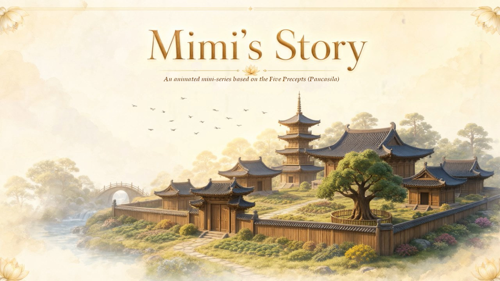
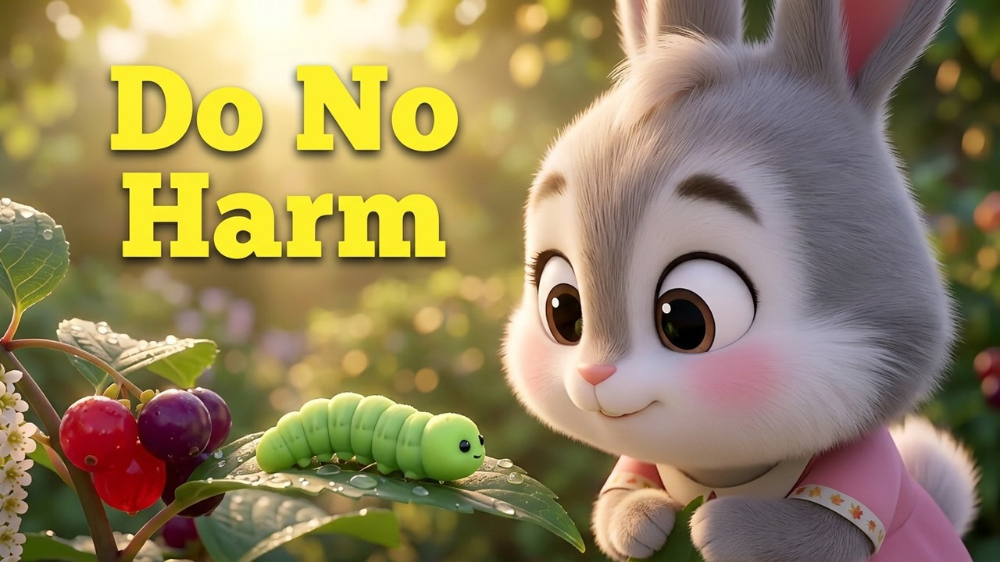
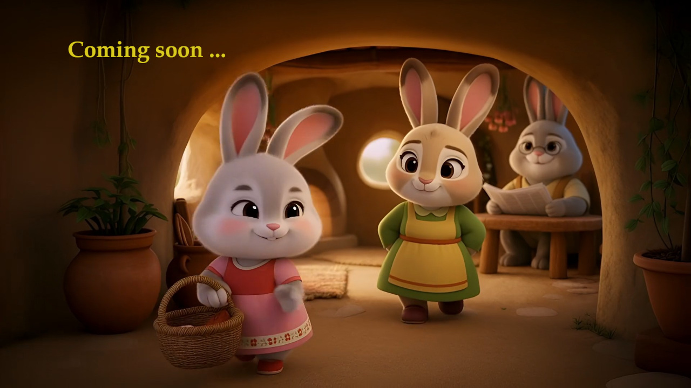

Mimi's Story is a gentle animated series for young children, inspired by the Five Precepts of Buddhist teaching. Set in peaceful Dharmagarden forest monastery, the series follows Mimi Rabbit and her friends as they learn what it means to live with kindness, honesty, and care for one another.
The Five Precepts are not taught as rules to obey, but as lanterns to carry. Each episode follows a small story; a stolen cookie, a boast that grows too tall, a moment of anger and lets the characters discover for themselves why the precepts matter. There is no preaching. There is only the quiet unfolding of wisdom through friendship, mistake, and repair.
Designed for children ages 5–10, Mimi's Story uses simple emotions, clear storytelling, and the warmth of familiar characters to make timeless teachings feel welcoming and alive. A wise old tortoise named Sage Kwai appears when he is needed, offering a gentle word and disappearing back into the garden the way real wisdom does. Quietly, and without fanfare.

While gathering berries in the forest garden, Mimi is startled by a fat green caterpillar. Angry after a tumble, she chases it with the intent to swat it. She collides instead with Sage Kwai, a serene old tortoise, who quietly shows her the caterpillar's transformation into a butterfly. Through the small miracle of transformation, Mimi learns that every living being wants to be happy and safe and that the world becomes a wonderful place when we do not harm.

Mama Rabbit bakes cookies for the monastery festival, and Mimi is asked to guard the jar. That same morning, a poor boy squirrel named Sami, desperate to feed his sick mother steals the cookies. Sage Kwai witnesses the theft but stays silent.
When the cookies are discovered missing, the neighbors accuse the old tortoise. Mimi recognizes him from her dream and defends him. Sami, watching from hiding, steps forward to confess. Sage Kwai praises his honesty. Mimi gives the cookies and berries freely to Sami's family. She sees Sage Kwai Walking away quietly and realises that he is real.
Mimi visits Sami's hollow tree home and notices a small empty chair at the table. She notices too the wooden squirrel carving on the shelf, and the way Sami's mother sometimes looks toward the door as if waiting for someone who is not coming. Through gentle questions and quiet answers, Mimi learns that Sami's father left long ago after breaking a promise to be faithful to his wife.
The broken home has been habouring a sadness they never spoke aloud. Sage Kwai teaches that broken promises hurt more than the promise itself. It is the silence that leaves a house cold. With Mimi's friendship and Mama Squirrel's courage, the family begins to speak the truth, and the empty chair becomes a little less cold.
Auntie Feather has always loved a good story and the attention it brings. She has told her son Chucky that his father, Flaming Feathers, is a legendary fighter descended from champion cocks. The boasting spreads through the village, until an eagle warrior arrives to challenge the great fighter.
Flaming Feathers knows he cannot win, but backing down would humiliate his family. He fights, tries to be funny, but is easily defeated. Just as the eagle prepares a killing blow, Chucky rushes into the arena. Sage Kwai throws himself between them. The eagle's talons break on his shell, and it flees in pain. Sage Kwai's lesson is simple: truth protects us. A boast may win applause, but it puts the ones we love in danger. Auntie Feather and Flaming Feathers pledge never to lie again.
Mikey Chimp, against his better judgment, eats magic mushrooms he finds in the forest. His mind becomes clouded and he steals Sage Kwai's alms bowl, strikes Sami by accident with it, and mistakes his own mother for a monster. Mimi, Chucky, and Sami try to restrain him, but only Sage Kwai can calm him.
After Mikey returns to himself, Sage Kwai teaches that of all the five precepts, this one is the most important because a clouded mind cannot keep any of the others. He recommends the true medicine: a clear mind, a soft heart, and stillness.
On the day of the monastery's festival, all the friends gather beneath the ancient pagoda. Each child recalls the precept they have learned. Together they recite the Five Precepts, a chant simple enough for young voices, held up by the wisdom of the whole village. Sage Kwai offers his final teaching: the precepts are not rules. They are lanterns and each one lights the way for the others.
As the children release their lotus lanterns into the evening sky, Sage Kwai quietly leaves but all that the children sees is a single butterfly rises with the lights. Mimi, watching, whispers her signature line for the last time "… A wonderful place."
End of series.